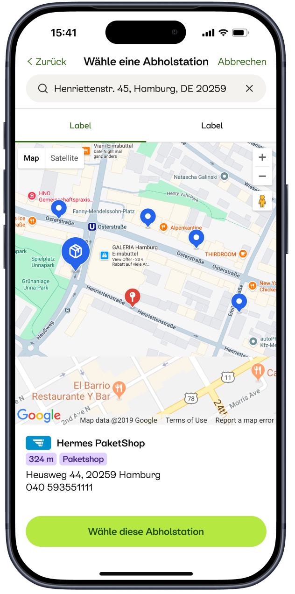
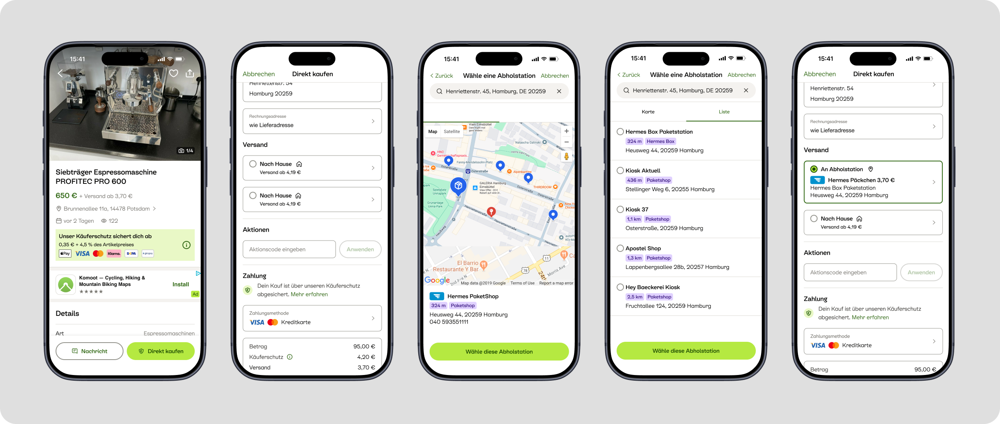
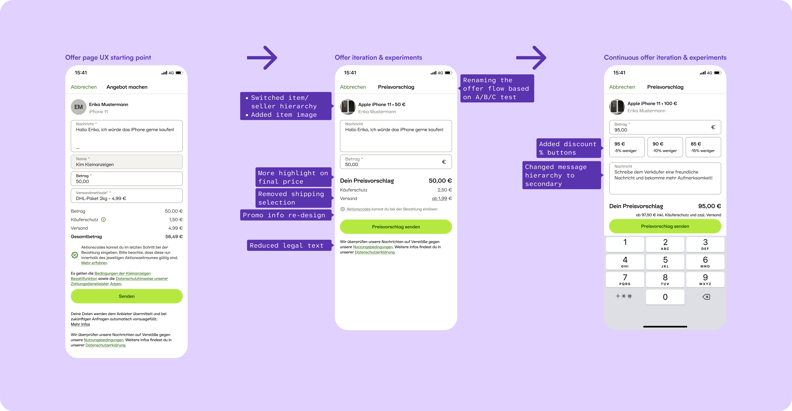

Shop Selection - Map
Buyers can select a convenient pickup point using a map or a list.

Introducing a new delivery option revealed a bigger opportunity
Kleinanzeigen was introducing Shop-to-Shop Shipping, giving buyers and sellers a new way to send and receive items through participating shops.
Integrating this new delivery option meant more than adding another shipping method. Buyers needed to understand how delivery worked, select a convenient pickup point, and complete their transaction with confidence.
As I worked across the transaction journey, it became clear that the existing offer flow also needed to evolve. To accommodate additional shipping options and future pickup possibilities, we needed to rethink how shipping decisions fitted into the experience.
This led to a broader redesign of the offer flow, where we explored different approaches and used product data to validate whether shipping selection needed to happen at that stage at all.
The existing transaction journey needed to accommodate a new delivery model while remaining clear and easy to complete.
For buyers, this meant understanding the delivery option and choosing a suitable pickup point. For sellers, the experience needed to fit into the existing transaction process without introducing unnecessary complexity.
But Shop-to-Shop Shipping also exposed a broader structural challenge: as Kleinanzeigen introduced more delivery options, the offer flow needed to support that growing complexity.
Simply adding more shipping choices to the existing flow risked making it harder to maintain and evolve.
The challenge was twofold:
I worked across the transaction journey to integrate Shop-to-Shop Shipping into the existing delivery experience.
Rather than treating pickup-point selection as an isolated feature, I considered how it connected to ad insertion, shipping selection, checkout, payment, and post-purchase interactions from both buyer and seller perspectives.
Buyers could find a convenient pickup location directly within the transaction flow, while Shop-to-Shop Shipping became a natural part of the selling flow for sellers.

Introducing another shipping option exposed a broader challenge: the existing offer flow needed to accommodate future delivery options, including pickup, without adding unnecessary complexity.
I explored different approaches to redesigning the flow, questioning whether shipping selection needed to happen at this stage at all.

Our analysis showed that removing shipping selection from the offer flow did not negatively affect offer-flow completion or conversion.
This allowed us to simplify the experience without compromising these key metrics.
Shop-to-Shop Shipping quickly became a significant part of Kleinanzeigen's shipping mix, reaching approximately 30–50% of total shipping volume within a few months.
€ 770K+
Total revenue generated
17.82% ↑
Monthly revenue growth after launch